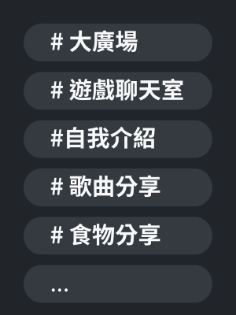

由一群熱愛追星的學生們打造的伺服器
StarChase：追星基地 是一座專屬於粉絲的交流平台，提供一個自在交流、分享喜愛與收穫共鳴的空間，讓每個人都能在這裡找到追星的好夥伴。
這裡追的不只是星光，還有在這條路上陪伴彼此的朋友與分享笑聲的每個瞬間。
StarChase：追星基地 是一座專屬於粉絲的交流平台，提供一個自在交流、分享喜愛與收穫共鳴的空間，讓每個人都能在這裡找到追星的好夥伴。
從大廣場到粉絲繪，話題豐富，讓你找到聊得來的追星夥伴。
回歸、演唱會、生日等資訊集中整理，追星更有效率。
猜謎挑戰、互動任務等你參與，還有神祕小獎品等著你！
年末拼盤、里程碑、歷史上的今天，幫你保留每一個追星瞬間。
自在發言、自由玩梗，這裡是你的快樂星球基地。
在 StarChase，我們不只追星，也追朋友、追共鳴，還有那些能聊爆的快樂時光。
我們重視每位成員的感受與自由發言，歡迎各種性格、風格、本命的你安心加入，這裡不設限，只求開心。
我們的目標是打造一個溫暖、友善、充滿活力的社群，讓每個人都能在這裡找到屬於自己的位置。
如果你也熱愛追星，喜歡分享，想要找到志同道合的朋友，歡迎加入我們的 Discord 伺服器！
在這裡，你可以與其他粉絲交流、分享你的追星故事、參加各種活動，還有機會認識到更多有趣的人。
點擊下方按鈕加入我們，一起在 StarChase 追尋星光吧！
立即加入